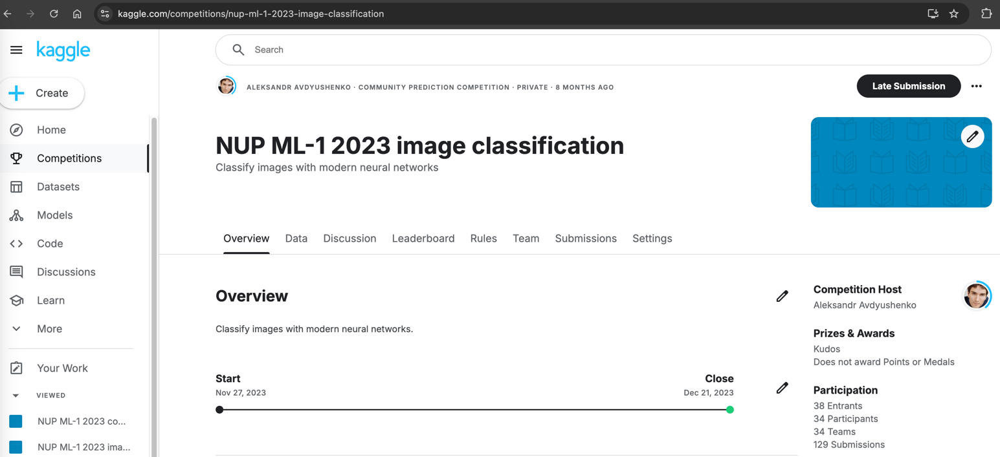

Build a 2024 ML Course from Scratch:
Insights & Teaching Strategies with JetBrains
1. Some examples of applying AI to modern problems
2. Practical aspects of creating ML course

Source: kdnuggets.com
Modern machine learning models
And also LLama, Mistral, Grok…
And what about teaching routine automatization?

-
AI can help you create a draft of one slide or
transform a short course description into a nice-looking syllabus
-
But the key content of the course is up to you
- Currently, it cannot create interesting, well-thought-out, and detailed homework assignments
- It cannot check the students' code
and provide valuable feedback
- Maybe the only way of using such technology in teaching
is to create a chatbot
that will answer the most common questions from students
So it will not replace a real teacher,
but it can help to save some of your time
Motivation for teaching (and studying) ML
- AI now is third literacy, after classical literacy and programming
- Machine learning is becoming more and more common everywhere,
including in cutting-edge science and business
- Since 2024, there is even International Olympiad in AI for school students:
IOAI
- The opportunity to deeply understand the material that you are teaching 😁
- And, of course, it is fun to teach and study ML!
3-5 min break for the questions and then..
1. Some examples of applying AI to modern problems
2. Practical aspects of creating ML course
Creating a Machine Learning course from scratch
🛠
⚡️
🔬
🔄
🇨🇾
What is the main difficulty?

What do you need to succeed?
- Assemble a strong teaching team
with both academic and industry experts
- Thought out and resolved yourself assignments
- Trust and openness, chat with students
- Kaggle-style competitions
- Better to record and quickly share video lectures
- Interactive and emotional atmosphere,
questions for the audience
How do we teach Machine Learning at Neapolis University?
Part 1: Fundamentals of Machine Learning
- ML tasks types, examples, quality evaluation
- Linear models, gradient descent, decision trees
- Ensembles, random forest, and gradient boosting
- Fully connected neural networks and backpropagation
- Building GPT-2 from scratch
Part 2: Advanced Machine Learning
- Clustering and EM-algorithm
- LLM: tokenization, interpretations, embeddings
- Building AlphaZero from scratch
- Generative and discriminative models:
VAE, GANs, flows, and diffusion
- RAGs and multi agents LLMs
And how to address the question about course updates?
Assignments and grading
Grading rule-of-thumb: 50%-70%-90% 👍
Zoo of platforms
1. JetBrains Marketplace for all code assignments because of IDE

2. Kaggle Community for all competitions

3. Cogniterra for theory and exam and
GitHub for final project assignment
My setup for online teaching in 2024
- Slides in JavaScript (reveal.js): for animations, video, and interactivity
- Formulas and hand-drawn pictures in Notability on iPad
- PyCharm and Jupyter notebooks for coding demos
OBS Studio for combining
different scenes and streaming it
🥳🎉📚 Thank you for attention and text me anything! 📚🎉🥳